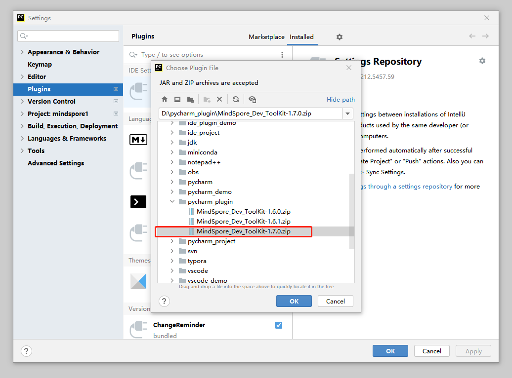

MindSpore Dev Toolkit文档
MindSpore Dev Toolkit是一款面向MindSpore开发者的开发套件。通过深度学习、智能搜索及智能推荐等技术，打造智能计算最佳体验，致力于全面提升MindSpore框架的易用性，助力MindSpore生态推广。
MindSpore Dev Toolkit目前提供 创建项目 、智能补全 、算子互搜 和 文档搜索 四项功能。
系统需求
MindSpore Dev Toolkit 是一款 PyCharm 插件。PyCharm是一款多平台Python IDE。
插件支持的操作系统：
Windows 10
Linux
MacOS（仅支持x86架构，补全功能暂未上线）
插件支持的PyCharm版本:
2020.3
2021.1
2021.2
2021.3
安装
获取插件安装包
1.1 下载 插件Zip包 。
1.2 参见下文源码构建章节
启动Pycharm单击左上菜单栏，选择File->Settings->Plugins->Install Plugin from Disk。 如图：

选择下载好的插件包（以1.7版本安装包为例）。
插件安装成功。

源码构建
请阅读 源码编译指导 。
RELEASE NOTES